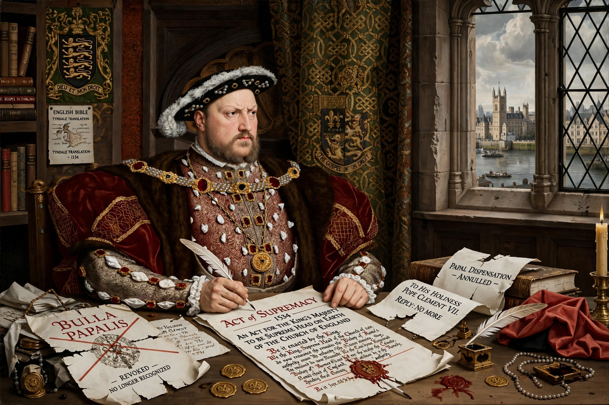

English Reformation
From Wikipedia, the free encyclopedia

The English Reformation was the series of events in sixteenth-century England by which the Church of England broke away from the authority of the Pope and the Catholic Church. Beginning with Henry VIII's desire to annul his marriage to Catherine of Aragon, it proceeded through the Dissolution of the Monasteries, the Protestant reforms of Edward VI, the Catholic restoration of Mary I, and the Elizabethan Settlement of 1559, which fixed the church's enduring character.
2. Edwardian reform and Marian reaction
3. Elizabethan settlement and legacy
Henry VIII's break with Rome
When Pope Clement VII refused annulment, Parliament passed the Acts of Supremacy (1534) making the king Supreme Head of the Church of England; Thomas Cromwell engineered the dissolution of some 800 religious houses (1536–41), transferring vast wealth to the Crown. Theologically Henry remained largely Catholic; resistance — Thomas More, John Fisher, the Pilgrimage of Grace — was crushed.
Edwardian reform and Marian reaction
Under Edward VI (1547–53), Thomas Cranmer's Book of Common Prayer (1549, 1552) and Forty-two Articles made the church clearly Protestant, with communion in both kinds, clerical marriage and stripped altars. Mary I restored papal obedience and burned some 280 Protestants, including Cranmer — earning her the name 'Bloody Mary' and hardening English anti-Catholicism.
Elizabethan settlement and legacy
Elizabeth I's settlement (1559) restored royal supremacy (as 'Supreme Governor'), imposed a moderately Protestant prayer book and the Thirty-nine Articles (1563/1571), aiming at a comprehensive national church. The settlement's tensions — between 'Anglican' via media, Puritan reformers and Catholic recusants — drove politics through the Civil War era and shaped the Anglican Communion worldwide.